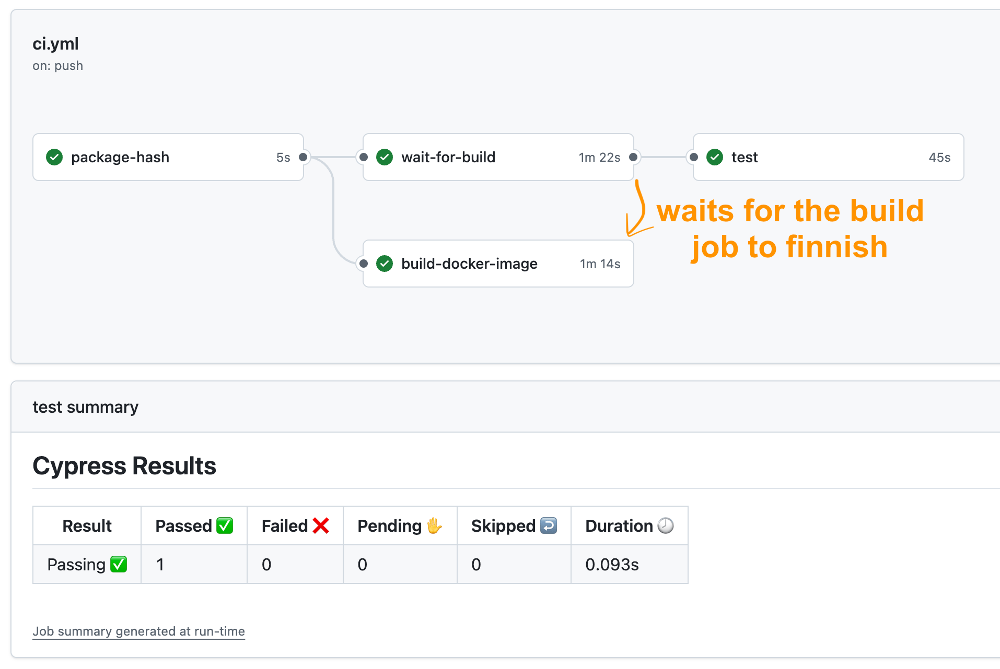
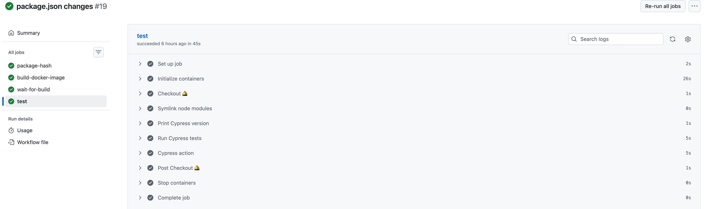
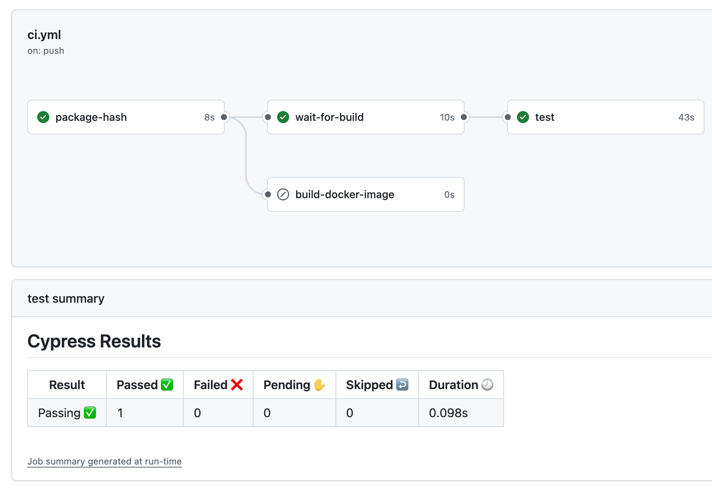
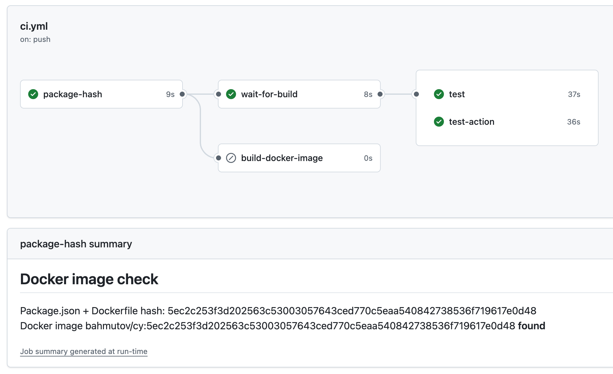
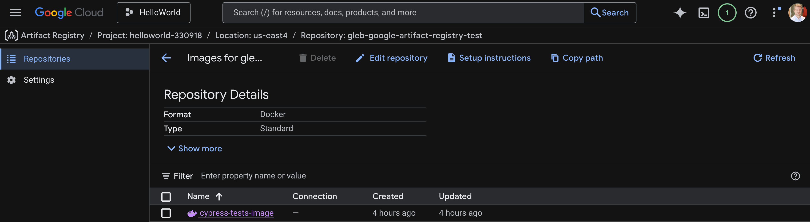
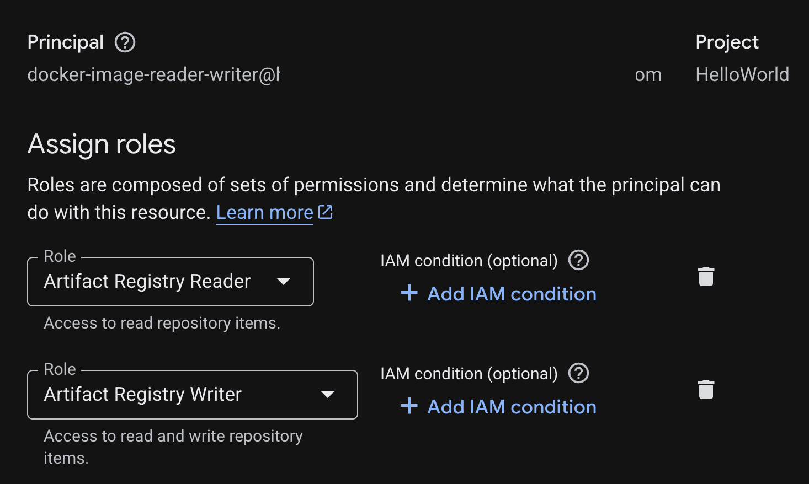

Use a Docker image to cache end-to-end testing dependencies.
If you are testing a website, the DEV dependencies do not change very often. You might bump Cypress version once in a while, add or upgrade a Cypress plugin, but in general the Node dependencies are changed less frequently than the spec files. Thus running npm ci on every test job is bound to be repetitive work that slows down your testing pipelines.
Of course, each CI allows you to cache dependencies between the jobs - but why do you need to even think about it? You want to cache all dependencies the very first time npm ci runs for the given package.json or package-lock.json file, not the first time each the workflow runs! Most CIs let you control the container image used for running tests; I assume you use one of Cypress Docker images or one of Cypress Docker images with browsers installed. So what if we could create our own Docker image based on Cypress (or any appropriate Docker base image you might want) and run npm ci in that image, and then use that Docker image to simply run our current tests?
I had the idea of caching separately PROD and DEV images inside Docker containers a loooong time ago, see the bahmutov/double-docker repo. In this blog post, I will show a simple approach that works for repositories with tests only, the situation described in the blog post Separate Application And Tests Repos GitHub Actions Setup. We will use GitHub Actions and the public Docker registry.
In the nutshell:
whenever the user changes package.json or Dockerfile, we build a new Docker image with the node_modules and Cypress binary folders (but no other source code)
we push the built Docker image to the registry
every CI run simply pulls that Docker image and checks out the tests into the container
the tests run immediately after the checkout step, since there is nothing to install
# https://hub.docker.com/r/cypress/browsers/tags # FROM cypress/browsers:node-24.12.0-chrome-143.0.7499.169-1-ff-146.0.1-edge-143.0.3650.96-1
# diagnostics RUNecho"node -v" RUNecho"npm -v"
# copy ONLY the package.json and package-lock.json files WORKDIR/e2e COPYpackage.jsonpackage-lock.json./
# install npm dependencies # and put the Cypress binary in the local subfolder # https://on.cypress.io/installation ENVCYPRESS_CACHE_FOLDER=/e2e/cypress_cache RUNnpmci
# verify Cypress installation RUNnpxcypressverify
# the Docker image should have all Cypress OS dependencies installed # plus inside the "/e2e" folder # we will have # - node_modules with Cypress installed # - cypress_cache with the Cypress binary
Tip: you can use yarn.lock or any other lock file with this approach.
I am naming my image bahmutov/cy:<tag>, you can find them at the Docker hub. Note that it is important to build the image on the same OS architecture as the CI machines, in my case it will be ubuntu-latest.
Workflow
The first step in the workflow computes the combined checksum of package.json and Dockerfile files. It also checks if the Docker image tagged with this checksum exists already using action tyriis/docker-image-tag-exists.
jobs: # computes the hash of package.json and and stores it in the output # also checks if the Docker image with this tag already exists # outputs: # hash: the package.json hash # tag: whether the Docker image with this tag already exists, "found" or "not found" package-hash: runs-on:ubuntu-latest outputs: hash:${{steps.hash.outputs.checksum}} tag:${{steps.tag-exists.outputs.tag}} steps: -name:Checkout🛎️ # https://github.com/actions/checkout # only needed to get package.json and Dockerfile to compute the hash uses:actions/checkout@v6 with: sparse-checkout:| package.json Dockerfile -name:Package.json+Dockerfilechecksum id:hash run:echo"checksum=${{ hashFiles('package.json', 'Dockerfile') }}">>$GITHUB_OUTPUT
# https://github.com/tyriis/docker-image-tag-exists -name:CheckifDockerimagetagexists id:tag-exists uses:tyriis/docker-image-tag-exists@v2.1.0 with: registry:docker.io repository:bahmutov/cy # The container image tag tag:${{steps.hash.outputs.checksum}}
-name:Reportthecheckresults # print the tag result into Github Actions summary run:| echo "## Docker image check" >> $GITHUB_STEP_SUMMARY echo "Package.json + Dockerfile hash: ${{ steps.hash.outputs.checksum }}" >> $GITHUB_STEP_SUMMARY echo "Docker image bahmutov/cy:${{ steps.hash.outputs.checksum }} **${{ steps.tag-exists.outputs.tag }}**" >> $GITHUB_STEP_SUMMARY
Build and push
Great, let's build the Docker image if one is missing. We could have a job with every internal step using a condition:
1 2 3 4 5 6 7 8 9 10 11 12 13 14 15 16
build-docker-image: # builds the Docker image and pushes it to the Docker hub # but only if it does not exist yet runs-on:ubuntu-latest needs:package-hash steps: -name:Checkout🛎️ if:${{needs.package-hash.outputs.tag=='not found'}} # https://github.com/actions/checkout uses:actions/checkout@v6
jobs: # computes the hash of package.json and and stores it in the output # also checks if the Docker image with this tag already exists # outputs: # hash: the package.json hash # tag: whether the Docker image with this tag already exists, "found" or "not found" package-hash: runs-on:ubuntu-latest outputs: hash:${{steps.hash.outputs.checksum}} tag:${{steps.tag-exists.outputs.tag}} steps: ...
build-docker-image: # builds the Docker image and pushes it to the Docker hub # but only if it does not exist yet runs-on:ubuntu-latest needs:package-hash if:${{needs.package-hash.outputs.tag=='not found'}} steps: -name:Checkout🛎️ # https://github.com/actions/checkout uses:actions/checkout@v6
Now that we have Docker image build (if needed), let's use it. We can define another job that simply uses the bahmutov/cy:<tag> container, but it cannot depend on the build-docker-image job - if the job is skipped on GitHub Actions, any job that depends on it will be skipped too. Luckily, there is an easy fix: simply have yet another job that will simply "ping" build-docker-image job status. Once the build-docker-image job finishes or is skipped, our "ping" job resolves. The "ping" is done using lewagon/wait-on-check-action 3rd-party action. Here is how the last part of the workflow looks:
jobs: # computes the hash of package.json and and stores it in the output # also checks if the Docker image with this tag already exists # outputs: # hash: the package.json hash # tag: whether the Docker image with this tag already exists, "found" or "not found" package-hash: ... build-docker-image: # builds the Docker image and pushes it to the Docker hub # but only if it does not exist yet runs-on:ubuntu-latest needs:package-hash if:${{needs.package-hash.outputs.tag=='not found'}} ...
wait-for-build: # a trick to allow other jobs to run, even if the "build" job is skipped # runs in parallel with the "build" job and keeps checking if it is finished # or is skipped runs-on:ubuntu-latest needs:package-hash steps: -name:WaitfortheDockerimagebuild/skip # https://github.com/lewagon/wait-on-check-action uses:lewagon/wait-on-check-action@v1.4.1 with: ref:${{github.ref}} check-name:build-docker-image repo-token:${{secrets.GITHUB_TOKEN}} # seconds between checks wait-interval:10
test: # this job finishes after the Docker image is built (or exists already) runs-on:ubuntu-latest needs: [package-hash, wait-for-build] container:bahmutov/cy:${{needs.package-hash.outputs.hash}} steps: -name:Checkout🛎️ # https://github.com/actions/checkout uses:actions/checkout@v6
# THE IMPORTANT STEP: symlink the node modules # from the Docker image into the working folder # so we can skip the installation step -name:Symlinknodemodules run:ln-s/e2e/node_modules./node_modules
-name:PrintCypressversion run:npxcypress--version
-name:RunCypresstests run:npxcypressrun
The sym linking step is very important. After checkout finishes, the container has the following code
1 2 3 4 5 6 7 8
/e2e/ cypress_cache/ node_modules/ /<folder with checked out source code>/ cypress/ cypress.conf.js package.json package-lock.json
The current directory is set to /<folder with checked out source code>, so we need to make sure Node and Cypress can find the DEV dependencies. We do it by creating the symlink:
1 2 3 4 5 6 7 8 9
/e2e/ cypress_cache/ node_modules/ /<folder with checked out source code>/ node_modules -> /e2e/node_modules/ cypress/ cypress.conf.js package.json package-lock.json
We tell Cypress NPM module to find its binary in the /e2e/cypress_cache/ folder by using the environment variable baked into the Dockerfile: ENV CYPRESS_CACHE_FOLDER=/e2e/cypress_cache.
Run on GitHub Actions
Let's confirm that it works. We can push the code for the very first time, or change package.json or Dockerfile

The build and push step took 1m14s, and the "ping" job that checked the job status every ten seconds finished in 1m22s. The test job simply pulled the Docker container and ran the specs, without any additional installation or resting a cache.

Pulling the container from the Docker image is by far the longest step in the job.
Now let's push another commit - maybe we changed the specs, but haven't touched the package.json or Dockerfile. The Docker image should have been found.

We start testing pretty quickly, since we don't have to install or build anything.
Using The Cypress Action
Many years ago I wrote cypress-io/github-action, and I am happy to report that it works well with the Docker image with baked DEV dependencies. Here is another workflow job that simply uses the action after sym linking:
test-action: # this job finishes after the Docker image is built (or exists already) # and verifies the Cypress GitHub action works runs-on:ubuntu-latest needs: [package-hash, wait-for-build] container:bahmutov/cy:${{needs.package-hash.outputs.hash}} steps: -name:Checkout🛎️ # https://github.com/actions/checkout uses:actions/checkout@v6
# the important step: symlink the node modules # from the Docker image into the working folder # so we can skip the installation step -name:Symlinknodemodules run:ln-s/e2e/node_modules./node_modules
# confirm the Cypress action works -name:Cypressaction # https://github.com/cypress-io/github-action uses:cypress-io/github-action@v6 with: install:false

Finally, the GitHub Actions summary tells us if the Docker image exists or not based on the checksum.
jobs: # computes the hash of package.json and and stores it in the output # also checks if the Docker image with this tag already exists # outputs: # hash: the package.json hash # tag: whether the Docker image with this tag already exists, "found" or "not found" package-hash: runs-on:ubuntu-latest outputs: hash:${{steps.hash.outputs.checksum}} tag:${{steps.tag-exists.outputs.tag}} steps: -name:Checkout🛎️ # https://github.com/actions/checkout # only needed to get package.json and Dockerfile to compute the hash uses:actions/checkout@v6 with: sparse-checkout:| package.json Dockerfile -name:Package.json+Dockerfilechecksum id:hash run:echo"checksum=${{ hashFiles('package.json', 'Dockerfile') }}">>$GITHUB_OUTPUT
# https://github.com/tyriis/docker-image-tag-exists -name:CheckifDockerimagetagexists id:tag-exists uses:tyriis/docker-image-tag-exists@v2.1.0 with: registry:${{env.REGISTRY}} repository:${{env.IMAGE_NAME}} # The container image tag tag:${{steps.hash.outputs.checksum}}
-name:Reportthecheckresults # print the tag result into Github Actions summary run:| echo "## Docker image check" >> $GITHUB_STEP_SUMMARY echo "Registry: ${{ env.REGISTRY }}" >> $GITHUB_STEP_SUMMARY echo "Image: ${{ env.REGISTRY }}/${{ env.IMAGE_NAME }}" >> $GITHUB_STEP_SUMMARY echo "Package.json + Dockerfile hash: ${{ steps.hash.outputs.checksum }}" >> $GITHUB_STEP_SUMMARY echo "Docker image ${{ env.REGISTRY }}/${{ env.IMAGE_NAME }}:${{ steps.hash.outputs.checksum }} **${{ steps.tag-exists.outputs.tag }}**" >> $GITHUB_STEP_SUMMARY build-docker-image: # builds the Docker image and pushes it to the registry # but only if it does not exist yet runs-on:ubuntu-latest needs:package-hash permissions: # don't forget to allow workflows to write to GHCR # https://github.com/<org>/<repo>/settings/actions packages:write if:${{needs.package-hash.outputs.tag=='not found'}} steps: -name:Checkout🛎️ # https://github.com/actions/checkout uses:actions/checkout@v6
wait-for-build: # a trick to allow other jobs to run, even if the "build" job is skipped # runs in parallel with the "build" job and keeps checking if it is finished # or is skipped runs-on:ubuntu-latest needs:package-hash steps: -name:WaitfortheDockerimagebuild/skip # https://github.com/lewagon/wait-on-check-action uses:lewagon/wait-on-check-action@v1.4.1 with: ref:${{github.ref}} check-name:build-docker-image repo-token:${{secrets.GITHUB_TOKEN}} # seconds between checks wait-interval:10
test: # this job finishes after the Docker image is built (or exists already) runs-on:ubuntu-latest needs: [package-hash, wait-for-build] # seems we cannot use the env variables here container:ghcr.io/${{github.repository}}:${{needs.package-hash.outputs.hash}} steps: -name:Checkout🛎️ # https://github.com/actions/checkout uses:actions/checkout@v6
# THE IMPORTANT STEP: symlink the node modules # from the Docker image into the working folder # so we can skip the installation step -name:Symlinknodemodules run:ln-s/e2e/node_modules./node_modules
-name:PrintCypressversion run:npxcypress--version
-name:RunCypresstests run:npxcypressrun
I tried to make the workflow slightly more generic by moving the registry and the image into the env variables:
Let's say you want to use private Docker images stored on Google Artifact Registry. You need to create it on GCP, then create a Service Account to access it from CI (this is simpler for me than using Workload identity), see the docs.
So here is my Artifact Registry called gleb-google-artifact-registry-test running inside us-east4-docker.pkg.dev configured to run under the project helloworld-330918

We will write and read Docker images using name cypress-tests-image. I will use a single Service Account for this with these permissions

For this account, grab the JSON key file and set it as GitHub Actions environment secret GCR_KEY. Now let's build and use images with dependencies. Here is the workflow file from bahmutov/cypress-tests-image.
# this workflow uses Docker images via Google Artifacts Registry (GCR) # the registry is private, so we will use a Service Account to log in name:CIUsingGoogleArtifactsRegistry on:push
jobs: # computes the hash of package.json and and stores it in the output # also checks if the Docker image with this tag already exists # outputs: # hash: the package.json hash # tag: whether the Docker image with this tag already exists, "found" or "not found" package-hash: runs-on:ubuntu-latest outputs: hash:${{steps.hash.outputs.checksum}} tag:${{steps.tag-exists.outputs.tag}} steps: -name:Checkout🛎️ # https://github.com/actions/checkout # only needed to get package.json and Dockerfile to compute the hash uses:actions/checkout@v6 with: sparse-checkout:| package.json Dockerfile -name:Package.json+Dockerfilechecksum id:hash run:echo"checksum=${{ hashFiles('package.json', 'Dockerfile') }}">>$GITHUB_OUTPUT
wait-for-build: # a trick to allow other jobs to run, even if the "build" job is skipped # runs in parallel with the "build" job and keeps checking if it is finished # or is skipped runs-on:ubuntu-latest needs:package-hash steps: -name:WaitfortheDockerimagebuild/skip # https://github.com/lewagon/wait-on-check-action uses:lewagon/wait-on-check-action@v1.4.1 with: ref:${{github.ref}} check-name:build-docker-image repo-token:${{secrets.GITHUB_TOKEN}} # seconds between checks wait-interval:10
test: # this job finishes after the Docker image is built (or exists already) runs-on:ubuntu-latest needs: [package-hash, wait-for-build] # seems we cannot use the env variables here container: image:us-east4-docker.pkg.dev/helloworld-330918/gleb-google-artifact-registry-test/cypress-tests-image:${{needs.package-hash.outputs.hash}} credentials: username:_json_key password:${{secrets.GCR_KEY}} steps: -name:Checkout🛎️ # https://github.com/actions/checkout uses:actions/checkout@v6
# THE IMPORTANT STEP: symlink the node modules # from the Docker image into the working folder # so we can skip the installation step -name:Symlinknodemodules run:ln-s/e2e/node_modules./node_modules
-name:PrintCypressversion run:npxcypress--version
-name:RunCypresstests run:npxcypressrun
Weird GitHub Actions limitation: one cannot use env keys inside the image: ... string, thus we have to duplicate the full Docker string